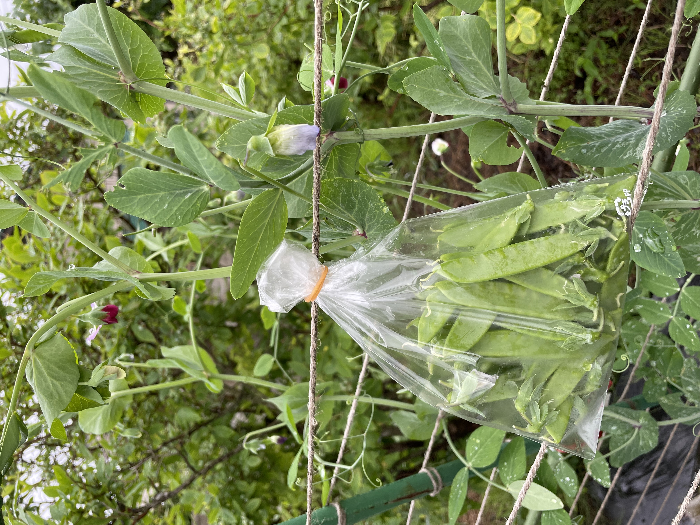
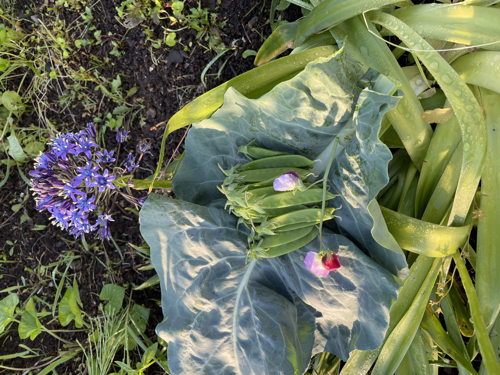

販売終了しました
申し訳ありませんが、現在キヌサヤエンドウの販売は終了しました。
他のおいしい野菜や商品をご覧いただけますので、ぜひご検討ください。
キヌサヤエンドウ
キヌサヤエンドウは、甘みと食感が特徴の人気のある野菜です。当店では新鮮でプリプリとした食感のキヌサヤエンドウを取り扱っており、その美味しさをお届けしています。生食や炒め物、煮物などに幅広く利用できます。
特性
- 甘みと食感のバランスが良い
- 豊富な食物繊維やビタミンを含む
- 調理によってさまざまな料理に活用できる
野菜の苗植え・収穫時期
キヌサヤエンドウの苗植えは春から初夏にかけて行われます。収穫時期は苗植えから約2〜3か月後の夏から秋にかけてです。適切な時期に収穫することで、より美味しいキヌサヤエンドウをお楽しみいただけます。
キヌサヤエンドウの写真

採れた日付: 2023年6月16日

採れた日付: 2023年6月8日